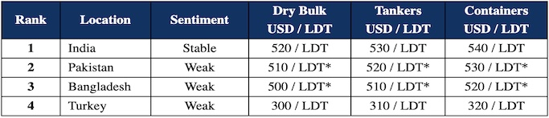

inWeekly Demolition Reports17/01/2023

Markets seem poised for some sort of recovery as steel prices inch up again (especially in India and Pakistan) and currencies seem to find a newfound acceptance at historic lows across the major recycling destinations, after what has been a bitterly silent 2022 full of declines and falls.
Financing remains of chief concern in both Bangladesh and Pakistan, with very few end users capable of opening fresh L/Cs on the import of vessels, although some are getting on by with private financing, which usually means and usance (rather than sight) L/Cs or higher interest rates.
The focus therefore falls on India for another week, on the few vessels that are available from larger Container Owners. Most of these are for HKC recycling only, and as such, would be heading to Alang anyway, regardless of the L/C concerns elsewhere.
With the Chinese New Year only about a week or so away, there is perhaps a shortage of candidates as owners wait to see if freight rates improve after China returns, particularly with its Zero-Covid policy having been recently abandoned and world economies continue to try getting back to normal.
If the mooted IMF loan to Bangladesh can finally be negotiated to ease the financial crisis there, we may see further competition from a traditionally bullish Chattogram market. Buyers in Pakistan are similarly keen to buy, but without L/C financing, it is currently very hard for Cash Buyers to get paid at present, so this is another wait-and-watch scenario for this market for now.
On the far end, Turkey continues to impress as plate prices improve and despite a continually weakening Lira, local prices continue to firm up, perhaps thanks to some of the Turkey only candidates that are rumored to be working basis an early Spring delivery.
For week 2 of 2023, GMS demo rankings / pricing for the week are as below.

📄 Download PDF: Ship-recycling-market-insight-week-02-2023-Fearing-Financing.pdfSource: GMS,Inc. ,https://www.gmsinc.net/gms_new/index.php/web